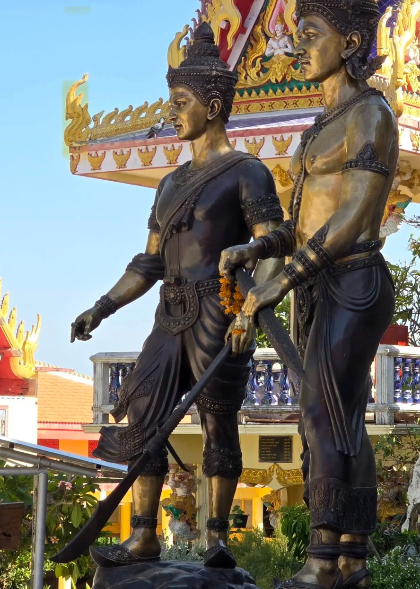
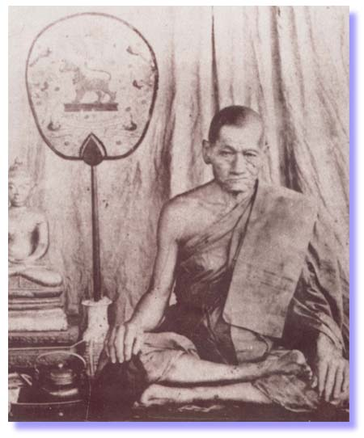
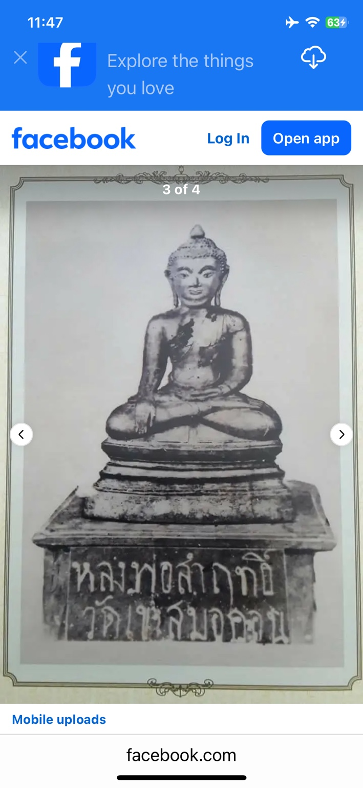
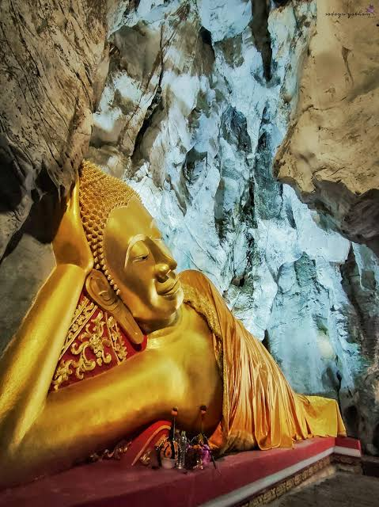
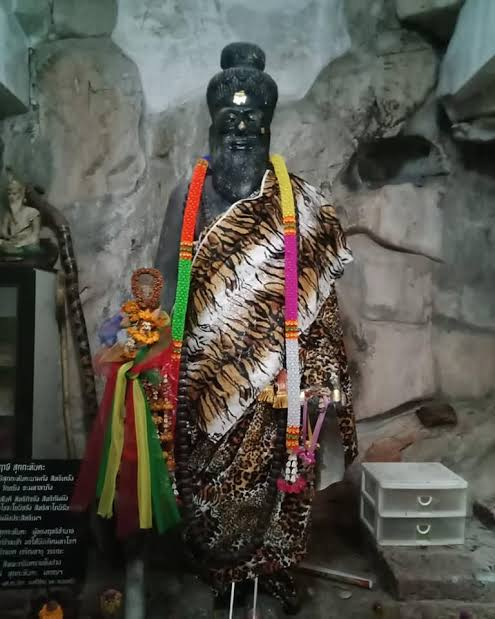
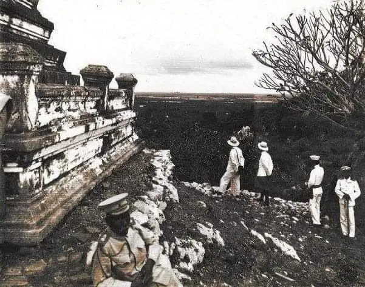

หลวงพ่อก๋ง
ข้อมูลประวัติจะเพิ่มเติมภายหลัง
มรดกแห่งศรัทธา • จังหวัดลพบุรี
ศรัทธาเหนือขุนเขา สืบสานพระพุทธศาสนาและมรดกแห่งท้องถิ่น
ยินดีต้อนรับ
ขอเชิญทุกท่านทำความรู้จักวัดเขาสมอคอน ผ่านเรื่องราวความเป็นมา พระพุทธรูป สิ่งศักดิ์สิทธิ์ และบุคคลสำคัญที่เกี่ยวข้องกับความทรงจำของชุมชน
HISTORY
วัดเขาสมอคอนตั้งอยู่บริเวณเทือกเขาสมอคอน ตำบลเขาสมอคอน อำเภอท่าวุ้ง จังหวัดลพบุรี เป็นวัดเก่าแก่ที่มีเรื่องราวเชื่อมโยงกับประวัติศาสตร์และความเชื่อของท้องถิ่น โดยมีหลักฐานและรูปแบบสถาปัตยกรรมที่กล่าวถึงความเก่าแก่ตั้งแต่สมัยอยุธยา
บริเวณวัดมีองค์เจดีย์ที่กล่าวถึงว่าเป็นเจดีย์ทรงระฆังบนฐานบัวและมีลักษณะย่อมุม ซึ่งเป็นรูปแบบที่พบได้ในศิลปกรรมไทยหลายยุคสมัย ภายในบริเวณยังมีอาคารทางศาสนาและพื้นที่ที่ผู้คนเดินทางมาสักการะ
ภายในถ้ำพระนอนมีพระพุทธไสยาสน์ซึ่งเป็นที่เคารพศรัทธา แหล่งข้อมูลที่นำมาเรียบเรียงกล่าวถึงองค์พระที่ก่อด้วยอิฐขนาดใหญ่และมีร่องรอยชำรุดตามกาลเวลา รวมทั้งการพบหลักฐานพระพุทธรูปที่เกี่ยวข้องกับศิลปะสมัยลพบุรีและอยุธยา
ตำนานท้องถิ่นเล่าว่าเขาสมอคอนเป็นที่พำนักของฤๅษีผู้เป็นอาจารย์ของพ่อขุนรามคำแหงมหาราชและพญางำเมือง โดยกล่าวว่าทั้งสองพระองค์เคยศึกษาเล่าเรียนในวัยเยาว์ เรื่องราวนี้ควรเข้าใจในฐานะตำนานที่สืบทอดในท้องถิ่นควบคู่กับการศึกษาหลักฐานทางประวัติศาสตร์
ข้อมูลที่ใช้ประกอบการเรียบเรียงกล่าวถึงการเสด็จประพาสของพระบาทสมเด็จพระจุลจอมเกล้าเจ้าอยู่หัวใน พ.ศ. ๒๔๔๘ ซึ่งสะท้อนความสนใจต่อพื้นที่และโบราณสถานในภูมิภาค
เรียบเรียงเบื้องต้นจากข้อมูลที่ผู้จัดทำรวบรวม โดยมีสำนักงานพระพุทธศาสนาจังหวัดลพบุรีเป็นแหล่งข้อมูลประกอบ เนื้อหาสามารถเพิ่มเติมและปรับปรุงได้ภายหลัง

SACRED PLACES
รวบรวมภาพที่เตรียมไว้สำหรับเว็บไซต์ สามารถเพิ่มคำบรรยายและข้อมูลเพิ่มเติมได้ภายหลัง
ข้อมูลประวัติจะเพิ่มเติมภายหลัง
ข้อมูลประวัติจะเพิ่มเติมภายหลัง

ข้อมูลประวัติจะเพิ่มเติมภายหลัง

พระพุทธรูปที่ผู้จัดทำระบุชื่อไว้

ภาพพระพุทธไสยาสน์ภายในถ้ำ

ภาพที่ผู้จัดทำเตรียมไว้สำหรับหมวดสิ่งศักดิ์สิทธิ์
ตามคำระบุของผู้จัดทำ

รอเพิ่มคำอธิบายและที่มาของภาพ
SUPPORT THE TEMPLE
ผู้มีจิตศรัทธาสามารถใช้ QR Code ที่แสดงไว้ โดยตรวจสอบชื่อผู้รับก่อนยืนยันการโอนทุกครั้ง
ขอขอบพระคุณทุกท่านที่ร่วมสนับสนุนการดูแลและทำนุบำรุงวัดเขาสมอคอน
ตรวจสอบชื่อบัญชีหรือชื่อผู้รับเงินให้ตรงกับข้อมูลของวัดทุกครั้งก่อนกดยืนยัน หากชื่อผู้รับไม่ตรงหรือไม่แน่ใจ โปรดสอบถามทางวัดก่อนดำเนินการ
QR Code ในหน้านี้เป็นภาพจากป้ายที่ผู้จัดทำส่งมา โปรดลองสแกนและตรวจสอบชื่อผู้รับด้วยตนเองก่อนใช้งานจริง
สแกน QR Code แล้วตรวจสอบรายละเอียดผู้รับก่อนยืนยัน
แบบฟอร์มนี้เป็นตัวอย่างหน้าตาเท่านั้น ยังไม่ได้ส่งหรือจัดเก็บข้อมูลจริง และยังไม่รองรับการอัปโหลดสลิปจนกว่าจะเชื่อมต่อบริการจัดเก็บข้อมูล
ขอขอบพระคุณที่ร่วมสนับสนุนการทำนุบำรุงพระพุทธศาสนาและวัดเขาสมอคอน จังหวัดลพบุรี
ขออำนาจคุณพระศรีรัตนตรัยและกุศลเจตนาในครั้งนี้ จงเป็นปัจจัยเกื้อหนุนให้ท่านและครอบครัวประสบความสุข ความเจริญ มีสุขภาพแข็งแรง ประกอบกิจการงานใดขอให้สำเร็จด้วยดี และมีความร่มเย็นเป็นสุขตลอดไป
ขอให้ท่านมีสติปัญญาในการดำเนินชีวิต พบแต่สิ่งที่เป็นมงคล และมีกำลังกายกำลังใจในการประกอบคุณงามความดีสืบไป
นี่เป็นเพียงตัวอย่างการแสดงข้อความบนหน้าเว็บ ข้อมูลไม่ได้ถูกส่งหรือบันทึก